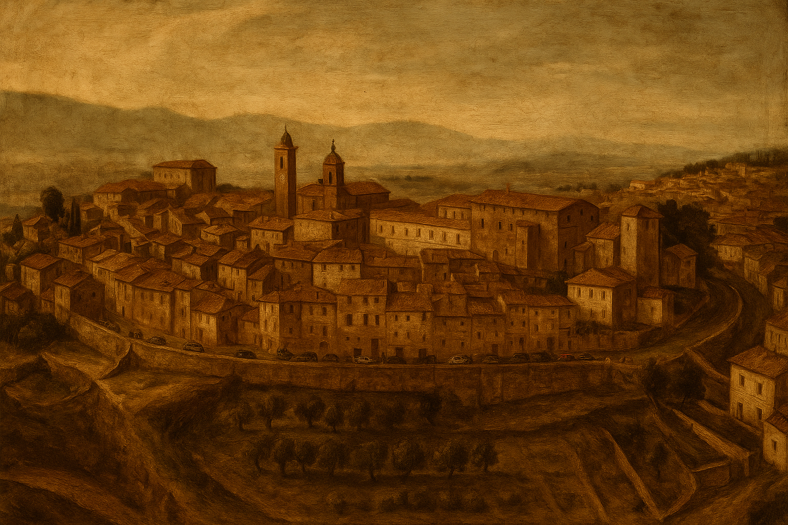

Città della Pieve from the 17th to the 19th Century: Politics, Art, and Society
Introduction:
Città della Pieve, a town in Umbria on the border with Tuscany, underwent major transformations between the 17th and 19th centuries under the rule of the Papal States, through the turbulence of the Napoleonic period, and finally its integration into the Kingdom of Italy. This essay examines in detail the political and administrative situation during the papal period, the impact of the Church and the Baroque on the city’s artistic and cultural life, the socio-economic changes of the 18th century, the effects of the French invasions around 1800, the city’s contribution to the Risorgimento, and the urban and identity transformations of the late 19th century. Città della Pieve represents an emblematic case in the evolution of many towns of central Italy, with unique local events and parallels with other Umbrian and Tuscan cities nearby.
Papal Rule in the 17th and 18th Centuries: Politics and Administration
At the dawn of the 17th century, Città della Pieve was part of the Papal States, though it had gained a new status: around 1600, Pope Clement VIII elevated the town to the rank of “city,” initially under the name “Città di Castel della Pieve.” At the same time, in 1601, a local diocese was established, carved out from the jurisdiction of the Diocese of Chiusi. This promotion brought a bishop to the city and symbolically marked the growth of its administrative and religious role.
Previously known as Castrum Plebis (Castel della Pieve), the city definitively assumed its current name to avoid confusion with Città di Castello. During this period, local governance was balanced between limited municipal autonomy and papal oversight. The community remained divided into its three historic Terzieri (Borgodentro, Castello, and Casalino), a medieval legacy that functioned as both administrative districts and frameworks for civic life (each elected its own prior and organized local militias).
However, real power rested with papal representatives. Until the mid-17th century, the Della Corgna family retained feudal influence: Ascanio della Corgna, Marquis of Castel della Pieve, had built the Palazzo della Corgna as his noble residence. After the death without male heirs of the last duke, Fulvio Alessandro Della Corgna, in 1647, the fief returned directly to the Holy See, ending the last remnants of noble autonomy. From that point on, administration was entrusted to papal governors, and the city became part of the Umbrian Province of the Papal States. The popes maintained a conservative structure: while feudal titles formally survived until 1800, they had been stripped of nearly all legal privileges. Municipal magistracies (such as the gonfaloniere and the city council) operated under papal supervision, and from 1816 Città della Pieve formed part of the Perugia Delegation in the new administrative division implemented by Pope Pius VII.
There were moments of crisis under papal rule. European wars and conflicts had local repercussions, such as during the War of Castro (1641–1644) between Pope Urban VIII and Duke Odoardo Farnese of Parma. In October 1642, Odoardo’s troops occupied Città della Pieve during the campaign against the Papal States, looting the city and the surrounding countryside for days. In 1643, allied forces of the Grand Duke of Tuscany (led by Prince Mattias de’ Medici) arrived and besieged the city, which was defended by a few papal soldiers. Eventually, Città della Pieve surrendered on June 19, 1643. The occupation brought extensive destruction: entire districts were demolished, peasants were plundered, the cathedral’s furnishings were carried off, and the population was burdened with heavy taxes. Only in July 1644, following peace between Parma and the Papacy, did Tuscan troops leave the city, restoring it to papal authority. These events show how Città della Pieve’s border position made it vulnerable to regional power struggles (Popes, Farnese, Medici), similar to other Umbrian and Lazio towns caught up in the conflict.
Despite such episodes, political life during the 17th and 18th centuries was largely marked by the stable administration of the Papal States. Although lacking true sovereign autonomy, the civic institutions ensured ordinary local governance: the presence of a bishop (the city became a diocesan seat in the 17th century) and municipal magistrates appointed (or approved) by Rome provided continuity.
Compared to neighboring Tuscan centers—such as Chiusi or Montepulciano, which were under the rule of the Medici and later the Lorraine Grand Dukes—Città della Pieve experienced fewer innovative reforms in local governance, remaining bound to traditional structures until the dawn of the 19th century. Politics in Città della Pieve thus reflected the broader context of the Papal States: obedience to papal authority, defense of the existing social order, and slow institutional evolution, consistent with the conservative policies that defined papal Umbria before the revolutionary upheavals.
The Church and the Baroque: Art, Architecture, and Cultural Life in the 17th–18th Centuries
From an artistic and cultural perspective, Città della Pieve in the 17th and 18th centuries experienced a period dominated by the influence of the Church and the Baroque style, which permeated architecture, art, and customs. Its elevation to a diocesan seat after 1600 gave new impetus to sacred construction: the Co-Cathedral of Saints Gervasius and Protasius — the main church located at the city’s highest point — underwent significant Baroque renovations.
In 1667, the cathedral’s wooden truss roof collapsed, and it was decided to rebuild it with vaulted masonry ceilings, in keeping with the prevailing style of the time. Between 1693 and 1708, several richly decorated side chapels were added, and in 1738 a new bell tower was erected. These modifications gave the church the appearance of mature Baroque, with altars dedicated to saints and relics that were objects of popular devotion. The church interiors were enriched with stuccoes, columns, and typical Baroque embellishments, transforming the original medieval spaces into dramatic devotional settings.
Sacred art in Città della Pieve flourished under the spirit of the Counter-Reformation. As early as the late 16th century, the painter Antonio Circignani, known as Il Pomarancio, had frescoed (in 1598) the apse and the dome of the cathedral choir. In the following decades, local artists and disciples of Perugino — such as Domenico Paride Alfani and Giacomo di Guglielmo — enhanced the chapels with paintings and decorative elements. Unfortunately, part of this artwork was lost: in 1783 a lightning strike hit the cathedral's tribune, damaging Pomarancio’s frescoes. Only the Eternal Father with angels in the apse remains visible today.
Despite this, many artistic treasures still adorn the churches of Città della Pieve, starting with the great Renaissance altarpiece by Pietro Perugino depicting the Madonna with Saints Gervasius and Protasius, located above the cathedral’s high altar. This work — painted in the late 15th century by the famed artist born in Città della Pieve — continued to be venerated in later centuries and remains a strong symbol of local identity.
The coexistence of Renaissance masterpieces and Baroque additions in the city’s churches reflects cultural stratification: the humanistic past coexisted with the new sensibilities of the 1600s, when the Church promoted emotional and didactic art to engage the faithful. Cultural life was largely shaped by religion. Lay confraternities (such as the Disciplinati Bianchi, owners of the Oratory of Santa Maria dei Bianchi where Perugino’s *Adoration of the Magi* fresco is preserved) organized processions and sacred festivals that marked the civic calendar. Patronal feasts — especially that of Saints Gervasius and Protasius, the city’s protectors — featured solemn ceremonies and broad popular participation.
17th-century sources report “miraculous discoveries of sacred relics” in the city, which stirred great devotion among the inhabitants. The baroque ceremonial apparatus — including processional platforms, fireworks, and sacred music — was similar to that of other Umbrian cities and nearby Rome. The community, guided by clergy and bishop, took part enthusiastically, finding in these events both spiritual comfort and a sense of social cohesion. The city’s Terzieri also contributed to cultural life with games and re-enactments: even during the Baroque period, traditional “bull hunts” and other contests were held by district associations as festive competitions during Carnival season.
These festive events (early forerunners of the current *Palio dei Terzieri*, still celebrated every year) demonstrate how religious and secular traditions coexisted: faith and the Church set the official tone of local culture, yet community entertainment tied to ancient civic rituals persisted. Architecturally, beyond the cathedral, other ecclesiastical structures also reflected the evolution of style. The Church of San Francesco, for example, was completely rebuilt in the 18th century: the original 14th-century Gothic church, by then inadequate, was demolished in 1776 (only the façade up to the rose window was preserved), and a new interior was constructed with more space and light.
Today its interior features elegant late-Baroque and neoclassical lines (broad vaults, chapels with stucco altars, and refined decorations in white and blue) — reflecting the changing tastes of the 18th century — while the austere surviving Gothic façade testifies to its medieval origins. These transformations aligned Città della Pieve with the artistic trends of the time: although a peripheral city, it absorbed architectural models fashionable in the Papal States, similar to other Umbrian centers such as Foligno and Spoleto, where cathedrals and churches were also renovated in Baroque forms during the 1700s. In summary, in the 17th and 18th centuries, Pieve’s culture was deeply imbued with spirituality and Baroque magnificence. The Church shaped artistic commissions and social rhythms: from altar paintings to processional statues, every artistic expression served to exalt faith. Local art and architecture, though inspired by “high” models (Rome, Perugia, etc.), acquired a distinctive character, harmoniously integrated into the city’s medieval urban fabric. This period laid the foundation for a strong sense of religious and cultural identity among the population — an identity that would partially endure even through the political upheavals that followed.
Economy and Society in the 18th Century: Papal Reforms and the Enlightenment

During the 18th century, economic and social life in Città della Pieve remained predominantly rural and traditional, though it was not untouched by top-down reform efforts and new Enlightenment ideas. The local economy was mainly based on agriculture: the fertile hills between the Val di Chiana and Lake Trasimeno produced grains, grapes, and olives, and the town had been known since the Middle Ages for the cultivation of saffron—a precious spice used as both a dye and a trade commodity. The presence of this "red gold" enriched local agricultural guilds over the centuries and even became a symbol in the town’s coat of arms.
In the 18th century, the agrarian structure was still based on sharecropping and small ecclesiastical holdings: vast lands were owned by religious orders or by the bishopric, and cultivated by peasants who paid part of the harvest as rent. This situation, common to much of papal Umbria, ensured stability but hindered innovation. In the 1700s, the papal authorities attempted some economic reforms to modernize the State. For example, Popes Benedict XIV (1740–1758) and Pius VI (1775–1799) promoted tax rationalization measures and encouraged agriculture through land reclamation and infrastructure, though to a lesser extent than the neighboring Grand Duchy of Tuscany.
In Umbria, and thus also in the Pieve area, some internal customs barriers were gradually abolished, and grain trade taxes were simplified. Toward the end of the century, the opening of the new carriage road known as the *Pievaiola*—connecting Perugia to Città della Pieve and Chiusi—improved transport routes and boosted trade with the Umbrian capital and Tuscany. This contributed to reviving local markets: Città della Pieve, located along this route, saw an increase in the flow of goods (grain, wine, livestock) and travelers.
Nevertheless, the city’s economic weight remained modest. Compared to nearby centers like Chiusi or Cortona (in Tuscany), which benefited from Leopoldine reforms such as the abolition of serfdom and the liberalization of trade, the Pieve territory remained marked by traditional socio-economic relations and was slow to absorb innovation. At the same time, the Enlightenment spread new ideas even within the Papal States, despite resistance from papal authority.
In Città della Pieve there were no significant Enlightenment circles, but some signs of the intellectual climate emerged. A symbolic example is the local scholar Cesare Orlandi, born in 1734, who authored a monumental work titled *Delle città d’Italia e sue isole adiacenti compendiose notizie* (1770–1778). This encyclopedic project—left incomplete at the letter C due to Orlandi’s death in 1779—compiled historical, geographic, and economic data on many cities (including his own), driven by the rational and documentary spirit of the Enlightenment.
The work, considered a valuable 18th-century source, shows how even in a small Umbrian town there were intellectuals engaged in the broader European cultural movement, interested in cataloguing knowledge and promoting local realities. Orlandi himself, an educated priest, represents that segment of enlightened clergy who sought to reconcile faith and reason. Socially, the 18th century began to reveal changes that would lead to the emergence of a local bourgeoisie. Alongside the landowning nobility and the clergy, a class of lay professionals—doctors, notaries, wealthy merchants—began to gain increasing influence within the community, even if they did not challenge the established order.
These urban elites, though small in number, introduced ideas of progress: for example, they supported the establishment of basic schools for children (often run by reformist religious orders such as the Piarists or the De La Salle Brothers, supported by Benedict XIV), and promoted literary academies modeled after those in Perugia. The proximity to Tuscany—where Grand Duke Peter Leopold implemented radical Enlightenment-inspired reforms—offered a stimulating point of comparison: across the border, torture was being abolished and new agricultural methods discussed; within the Papal States, such topics began to be timidly explored in local intellectual salons.
A significant episode was the suppression of the Jesuit Order in 1773 by Pope Clement XIV. In Città della Pieve, if any educational institutions had been run by the Jesuits (or other orders suppressed afterward), they passed under secular or diocesan control, creating space for teaching more oriented toward science and modern languages. These changes were slow and partial but helped expand the community’s intellectual horizons.
In summary, in the final decades of the 18th century, Pieve society began to breathe “new air”: alongside its long-standing Catholic traditions, there emerged an interest in reform and a first sense of secular civic identity. This intellectual and cultural groundwork would later facilitate the acceptance—by a minority of citizens—of revolutionary and Risorgimento ideals, thus preparing the way for the epochal changes that would follow at the end of the century.
The Napoleonic Invasions and the Roman Republic (1798–1800)
The French Revolutionary events and the rise of Napoleon Bonaparte had a deep impact on Città della Pieve between the late 18th and early 19th centuries. In 1798, with the occupation of Rome by French troops, the Papal States collapsed: the Roman Republic (1798–1799) was established, a republican regime inspired by French revolutionary principles. Umbria was directly involved: in Città della Pieve, as in the rest of the province, local papal authorities were removed and replaced by pro-French administrators.
The city was likely incorporated into the Department of Trasimeno (named after Lake Trasimeno), a new administrative division created by the French including Perugia and surrounding areas. Thus, for the first time, a secular republican government was established, complete with modern symbols and procedures: the tree of liberty was raised in public squares, the French tricolor flew alongside the Roman one, and municipalities and councils were formed following the French model.
The short-lived Roman Republic introduced some radical changes: equality before the law was proclaimed, remaining feudal rights and ecclesiastical tithes were abolished, and contemplative religious orders were suppressed with the confiscation of their assets. In Città della Pieve, this may have meant the seizure of properties belonging to the cathedral chapter or local convents (to be sold to private citizens or absorbed by the State) and the end of feudal taxes that some peasants may still have owed to the bishop or to noble landlords. The population’s reaction to these upheavals was mixed: educated classes and parts of the emerging bourgeoisie likely welcomed the Enlightenment reforms introduced by the French (civil liberties, reduction of clerical power), while the common people, traditionally tied to the Church, often responded with suspicion.
No major uprisings were recorded in the city — there is no evidence of “Viva Maria” (the pro-Austrian and pro-papal peasant uprisings seen elsewhere) — but tensions were evident. By 1799, the advance of Austrian and Russian troops in Italy led to the fall of the Roman Republic: with the French withdrawal, Città della Pieve briefly returned to papal control, though the Napoleonic saga was not yet over. In 1809, Napoleon, now Emperor, decreed the annexation of papal territories directly into the French Empire.
Umbria and Lazio (excluding the city of Rome) were integrated into the empire: the Departments of Trasimeno (capital: Perugia) and Tiber were created. From 1809 to 1814, Città della Pieve was therefore part of the Napoleonic Empire. During this five-year period, the city experienced French modernization more fully. Administratively, it became the seat of a canton within the Department of Trasimeno, with a *maire* (mayor) appointed by the government and a municipal council. The Napoleonic Civil Code was implemented, introducing new legal institutions: the secularization of civil status (birth, marriage, and death records were kept by the municipality rather than by the parish), the possibility of divorce, and equal inheritance among children (overcoming the old feudal entail system).
Economically, Napoleon imposed military conscription and heavy taxation: many young men from Città della Pieve were forcibly enlisted into the French armies and sent to fight far from home (some never returned from campaigns in Spain or Russia). Municipal coffers had to cover requisitions of food and money for the imperial army. On the other hand, inclusion in the Empire also brought some benefits: the definitive suppression of religious orders in 1810 freed up buildings later used for public purposes (e.g., former convents converted into barracks, hospitals, or schools); greater religious freedom was granted to minorities (any Jewish inhabitants in the area were granted full civil rights, although the local Jewish community was minimal or nonexistent); public works were initiated to modern standards, and a uniform legal system encouraged trade with neighboring regions now under the same administration.
Following Napoleon’s defeat in 1814, Città della Pieve was returned to the Papal States. The Restoration reimposed papal control, but could not entirely erase the revolutionary experience: some French administrative reforms left a lasting mark. When Pope Pius VII returned to power, for example, he retained the division into prefectures/delegations (partly inspired by the Napoleonic departments) to govern the provinces more efficiently. Moreover, many locals had now encountered new concepts of citizenship and individual rights, and viewed the return of the clerical *ancien régime* with growing skepticism. Not surprisingly, in the years that followed, liberal and Carbonari sentiments began to take root in Umbria.
It is worth noting that in 1849 there was a second episode of the Roman Republic (the Mazzinian one), but it mainly affected Rome and a few other cities; in Umbria, papal order was quickly restored by French troops sent by Napoleon III to support Pope Pius IX. Città della Pieve does not appear to have risen up during that time, but the echo of the 1848–49 revolts further spread Risorgimento ideas among the town’s more politically aware citizens, helping to prepare the ground for the unification movement of 1860.
The Risorgimento and the Unification of Italy: 1860 in Città della Pieve

During the years of the Italian Risorgimento, Città della Pieve—like all of Umbria—remained under Papal rule until 1859, but patriotic sentiments were growing even in this quiet border town. A crucial moment came on June 20, 1859, when nearby Perugia rose up against the papal government and was brutally repressed (an episode remembered as the “Massacre of Perugia”). These events caused outrage and solidarity throughout Umbria. It is likely that some liberal-minded citizens of Città della Pieve went to help the people of Perugia or conspired against the papal regime after hearing of the atrocities committed by papal mercenaries. In any case, secret committees were formed across Umbria in the following months, keeping in contact with Piedmont in anticipation of a liberating intervention. That opportunity arrived in September 1860.
As the army of the Kingdom of Sardinia invaded the Marche and Umbria under General Cialdini, the patriotic citizens of Città della Pieve took action. Even before the arrival of the Savoy army, on September 12, the town rose up: the tricolor flag was hoisted atop the town hall, proclaiming the fall of papal authority and allegiance to King Victor Emmanuel II. The few papal gendarmes were disarmed and forced to flee. Leading the local patriots was Colonel Luigi Masi (an officer from Orvieto), who, with about 200 volunteers, took control of Città della Pieve without encountering significant resistance.
For a brief moment, the town was free and governed by a provisional pro-unification committee. However, the Pope sent a contingent to attempt to retake control: the papal general Schmid marched two battalions toward Città della Pieve, which was reoccupied without a fight—upon hearing of the troops’ arrival, the patriots had already dispersed to avoid a hopeless clash. As an eyewitness account stated, upon the papal soldiers’ entrance, “the entire town was abandoned by the rebels, who, upon news of the approaching troops, partly withdrew into Tuscany carrying arms and ammunition, and about 200 retreated to Orvieto under Colonel Masi’s command.”
The papal control was short-lived: the swift advance of the Piedmontese army rendered any resistance from the Papal States ineffective. On September 14, 1860, Perugia fell to the Savoy forces, and just days later (between the 17th and 18th of September), decisive defeats of papal troops at Castelfidardo and Ancona marked the end of papal power in the Marche and Umbria. Facing 6,000 Piedmontese soldiers who had already occupied Città di Castello and were threatening Perugia from the north, General Schmid quickly abandoned Città della Pieve and withdrew.
On September 18, the Italian forces peacefully entered the town, welcomed enthusiastically by the population. Città della Pieve and its territory were placed under the Umbrian General Commissariat of Marquis Gioacchino Napoleone Pepoli, tasked with administering the former papal provinces in preparation for annexation to the Kingdom of Sardinia. The following weeks saw intense political activity. New liberal-aligned municipal administrators were appointed, and preparations were made for the plebiscite to confirm union with the emerging Kingdom of Italy.
The vote was held on November 4–5, 1860: in Città della Pieve, eligible male citizens were called to the polls to respond to the following question: “Do you wish to be part of the Constitutional Monarchy of King Victor Emmanuel II?” Local turnout was high. According to archival records, about 1,600 out of roughly 2,000 registered voters cast ballots in Città della Pieve—a significant figure, indicating strong mobilization and support. The result was virtually unanimous in favor of “Yes,” as was the case throughout Umbria. The result, telegraphed by the acting mayor (Gonfaloniere) Borghini, read: “In Città della Pieve, of approximately 2,000 registered voters, 1,600 voted. It is hoped they all voted yes.”
The plebiscite confirmed the will of the people of Città della Pieve to join a united Italy. Officially, Umbria (and with it Città della Pieve) was annexed to the Savoy kingdom on November 17, 1860, and following the proclamation of the Kingdom of Italy in March 1861, it became an integral part of the unified Italian state. Città della Pieve was included in the new Province of Perugia within the Kingdom of Italy.
The town’s entry into united Italy marked the end of a centuries-old era of papal rule and the beginning of profound institutional changes: immediate abolition of clerical temporal influence over governance, adoption of the Albertine Statute (which guaranteed certain civil liberties), introduction of Italian military conscription, and alignment with national legislation.
Despite these transformations, it is worth noting that the Risorgimento process in Città della Pieve—as in much of Umbria—occurred with relatively little violence and widespread popular support. This contrasts with the experience of some southern regions, where unification met with resistance (such as brigandage). One could say that the people of Città della Pieve in 1860 viewed union with Italy as progress: the local bourgeoisie gained opportunity and representation, and even peasants and artisans hoped for a more enlightened administration compared to the former clerical regime.
Thus, the Risorgimento in Città della Pieve was experienced with patriotic enthusiasm, fueled by a longstanding desire for freedom and modernization that had grown over previous decades and was ignited by the military events of 1859–60.
Urban, Cultural, and Technological Changes in the Second Half of the 19th Century
With its entry into the Kingdom of Italy, Città della Pieve experienced numerous urban, social, and technological changes from the second half of the 19th century onward, in a context of gradual modernization driven by the emerging local bourgeoisie. Between 1860 and 1890, the new unified government promoted infrastructure modernization policies even in smaller towns: in the Pieve area, roads were improved (the Pievaiola Road was upgraded to a regional state road), and most notably, the railway arrived. The Florence-Rome railway line—completed in the 1860s—passed not far from the town, and a station was built for Città della Pieve, serving the community for over a century.
The arrival of the train revolutionized transportation: people and goods could now travel faster, integrating the local economy with broader markets. Local agricultural producers could ship wine, oil, and saffron to Perugia, Florence, or Rome with ease, and industrial goods previously unavailable (machinery, metal tools, textiles) began arriving in town. A telegraph station was also installed at the town hall, connecting Città della Pieve to the new national real-time communication system. The urban layout, unchanged for centuries within the medieval walls, began adapting to the new era. In 1870, a renewed marketplace square was inaugurated, and public hygiene works were undertaken: street paving, the construction of sewers, and gas lighting on the main roads.
One of the symbols of 19th-century civic enthusiasm was the construction of the Teatro degli Avvaloranti, an elegant Italian-style theatre built into a pre-existing palace (or possibly newly renovated around 1870, according to local sources). This theatre—likely named after a local benefactor, Avvalorati/Avvaloranti—became the town’s social hub: it hosted plays, opera, dances, and conferences, reflecting a lively bourgeois cultural life. Similar theatres sprang up in other post-unification Umbrian towns (such as Teatro Morlacchi in Perugia or Teatro Caio Melisso in Spoleto), often promoted by local elites eager to bring their cities up to the refined standards of social life in unified Italy. Città della Pieve followed this trend, proving the presence of a proud and active urban bourgeoisie.
At the same time, the Pieve bourgeoisie—comprising professionals (doctors, lawyers), enlightened landowners, merchants, and state officials—assumed political and economic leadership of the community. Post-unification mayors and municipal councilors often came from these groups. They promoted various initiatives: the creation of secular public schools (a Technical School and a Normal School for female teachers were opened), the founding of the Workers' Mutual Aid Society (a widespread 19th-century Italian model to assist artisans and workers in case of illness or hardship), and the establishment of a municipal civic library.
Many of these efforts were inspired by the positivist and progressive spirit of the time. Bourgeois women also began to play greater roles in civic life, organizing charitable works and cultural events (in 1887, a Women’s Committee is recorded in Città della Pieve for celebrations of the 400th anniversary of Perugino’s birth—evidence of local historical-artistic awareness). Pieve society was thus evolving: illiteracy, still high in 1861, began to decline thanks to compulsory education; social relations grew less hierarchical as the landed nobility lost privileges and the clergy’s temporal power diminished.
Following the 1866–67 laws against the Church, many ecclesiastical assets (monasteries, land) were confiscated by the state and sold. In Città della Pieve, several former monasteries were repurposed—for example, the aforementioned San Francesco convent became public property (today housing offices and cultural spaces), and the old Episcopal Seminary was converted into a boarding school and later a public school. The clergy retained spiritual influence, but the municipality and secular institutions now led the town’s development. This sometimes created tensions: for instance, the implementation of the “non expedit” (a ban issued by Pope Pius IX forbidding Catholics from participating in national politics) initially kept many Catholic notables out of public affairs, allowing anticlerical liberals to dominate. Only towards the end of the century, under Pope Leo XIII, did the State-Church conflict begin to ease, and cooperation resumed among all sectors of society.
From an urban standpoint, expansion also occurred outside the medieval walls. In the second half of the 19th century, buildings began appearing near the old gates—such as Porta Perugina and Porta Fiorentina—including homes and industrial structures (mills, brick kilns) to support surrounding agricultural activities. The population grew moderately: from about 2,500 residents in 1861 to nearly 3,500 by 1900, reflecting improved hygiene and lower infant mortality. A key technological advancement was the introduction of electric public lighting at the end of the century: the first electric lamps appeared in Piazza del Plebiscito (now Piazza Matteotti) around 1897, gradually replacing gas lanterns.
This development, common in many small towns, symbolically marked Città della Pieve’s entry into the 20th century. Within Umbria, the town maintained a small yet vibrant character. It did not become an industrial hub—Italy’s industrialization focused elsewhere, and in Umbria it primarily affected Terni with its steel industry—but it did develop small-scale manufacturing linked to local resources: workshops producing linen and wool (aided by the presence of sheep farms nearby), woodworking and ironcraft shops, and a tradition of artistic ceramics.
The local bourgeoisie invested in promoting traditional products: regional agricultural fairs and exhibitions were hosted in town, placing Città della Pieve in competition with neighboring centers (such as Montepulciano or Perugia) for cultural and economic prominence in the area. Local identity evolved significantly. Whereas for centuries it had been rooted primarily in religion and loyalty to the Pope-King, after Unification it embraced a growing sense of both municipal and national patriotism. The post-1860 generations celebrated September 14 (anniversary of Perugia’s liberation) and September 20 (the Capture of Rome in 1870) as patriotic holidays alongside traditional religious feasts. The memory of Renaissance artistic glories—Perugino above all—became a source of civic pride: in 1872, a plaque was placed on Perugino’s birthplace, and local artists founded a civic art gallery showcasing works from the area.
This interest in the artistic past can be seen as a desire to construct a secular and cultured civic identity, complementary to the religious one. Even the local dialect and folk traditions (songs, proverbs, typical recipes like “torta al testo” with saffron) began to be valued as heritage worth preserving, in the wake of 19th-century romanticism’s embrace of popular traditions. In conclusion, in the post-unification period, Città della Pieve took a decisive step toward modernity. Though it remained a small rural center, it benefited from national unification by acquiring new services and a modern outlook. The bourgeoisie that emerged during these decades became the voice of progress, ushering the town into the 20th century. The medieval walls now enclosed not a static village under papal rule, but a dynamic community of Italian citizens, aware of both their roots—religious and artistic—and the opportunities of the future.
Conclusion
Between 1600 and the end of the 19th century, Città della Pieve experienced a complex historical journey, marked by both continuity and epochal turning points. Under papal rule during the 17th and 18th centuries, the town preserved its ancient municipal institutions and traditions, though it was subject to strict papal authority and occasionally involved in the conflicts that shook central Italy (such as the War of Castro, during which it was sacked in 1643).
The Church deeply influenced every aspect of life: art and architecture flourished in a Baroque style with renovated cathedrals, elaborate frescoes and altars, and cultural life revolved around religious festivals, confraternities, and communal rituals. Yet, during the 18th century, winds of change began to be felt: timid papal reforms and Enlightenment ideas introduced seeds of modernity—consider, for example, the scholarly work of Cesare Orlandi—foreshadowing the political upheavals to come.
The era of the Napoleonic invasions and the Roman Republic at the end of the 18th century marked a sudden break for Città della Pieve: in just a few years, the town shifted from papal theocracy to revolutionary principles of liberty and equality, later experiencing imperial French rule. Though these events were traumatic (forced conscription, confiscation of Church property) and short-lived, they left a significant legacy in terms of secular institutions and political aspirations. Thus, when the time of the Risorgimento came, the people of Città della Pieve were ready for change: in 1860, local patriots rose up, raised the tricolor flag, and actively contributed to Umbria's annexation to the nascent Kingdom of Italy. Entry into united Italy began an unprecedented process of renewal.
In the second half of the 19th century, the town underwent urban transformations (road and railway infrastructure, new public buildings like the Teatro Avvaloranti), social changes (the rise of the bourgeoisie, spread of education), and technological advances (public lighting, telegraph) that projected it into modernity. The local bourgeoisie assumed leadership roles, shaping a new civic identity that was more secular and national in spirit, yet still committed to preserving the town’s historical-artistic heritage and local traditions. This synthesis of old and new defines the originality of Città della Pieve’s journey: a small Umbrian town that, while retaining the traces of its glorious medieval and Renaissance past and devotion to traditional values, managed to adapt to the sweeping changes of the modern era.
In conclusion, the history of Città della Pieve from the 17th to the 19th century mirrors, on a local scale, the broader dynamics of Italian history: the slow decline of the old order, the push for cultural innovation, the clash between the ancien régime and new ideas, leading to national unification and progressive socio-economic development. Global events—from the wars of Italian princes to Napoleon’s campaigns, from the industrial Risorgimento to liberal reforms—had tangible effects on this town, shaping its destiny. At the same time, certain distinctive features (such as its strong Baroque religious imprint or its united support for the 1860 plebiscite) make it a unique case within the Umbrian landscape.
Compared to neighboring cities, Città della Pieve shows both parallels and differences: like Perugia and Spoleto, it shared papal domination and Piedmontese liberation; like nearby Tuscan towns, it felt the impact of reformist policies and benefited from new infrastructure; but it retained its own identity, based on a balance between tradition and innovation. This balance allowed it to enter the 20th century while preserving its historical heritage and simultaneously embracing the future—an example of the resilience and adaptability of the Italian provinces.